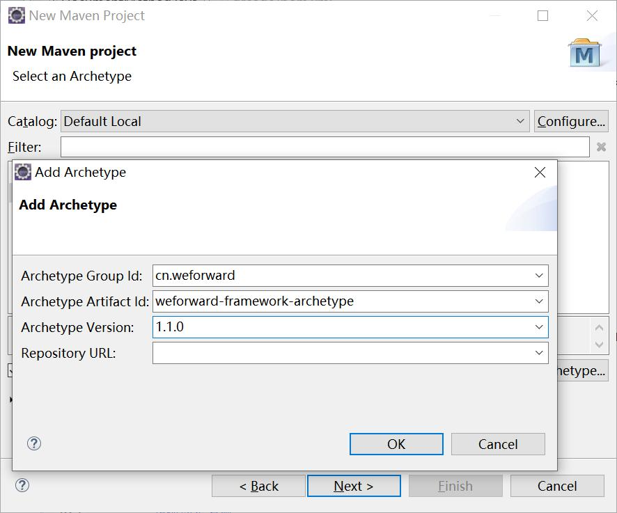
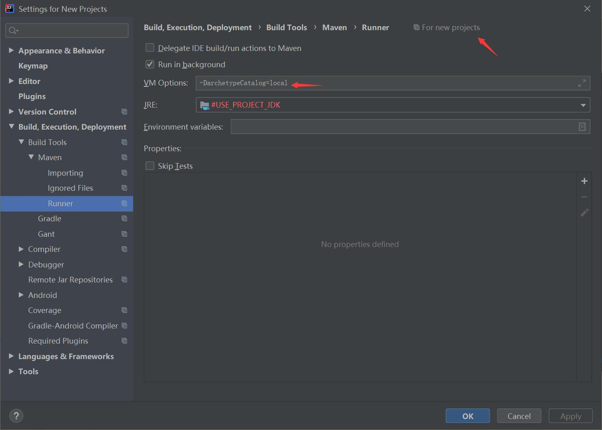
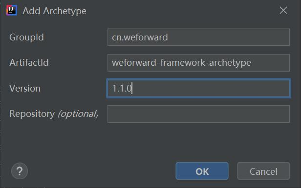
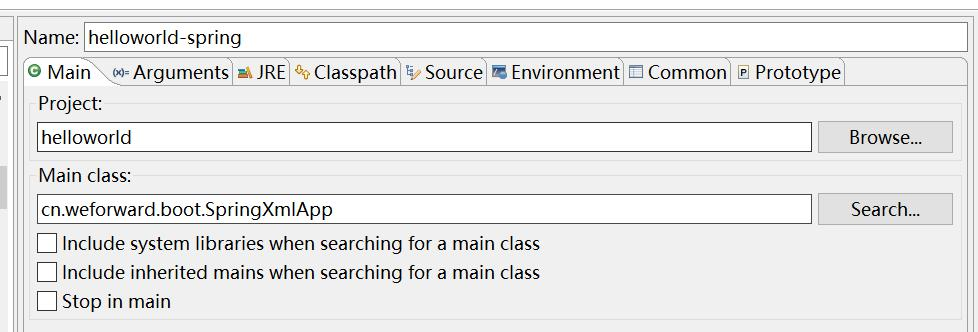

# 快速开始
先决条件
- JDK 1.8+
- Maven 3.2.5+
- IDE (Eclipse or Intellij IDEA等)
# 创建项目
Weforward Framework Archetype (opens new window)提供了一个Maven Archetype可用于快速搭建微服务。
1.命令行创建
mvn archetype:generate -DgroupId=my.test -DartifactId=mytest -DarchetypeGroupId=cn.weforward -DarchetypeArtifactId=weforward-framework-archetype -DarchetypeVersion=1.1.0 -DinteractiveMode=false -DarchetypeCatalog=local
2.Eclipse创建
New Maven Project后Next到Select an Archetype，Catalog选择Default Local，然后点击Add Archetype，填入以下内容

之后点击OK,再Next...
3.IDEA创建
先在Configure->Settings->Build，Execution，Deployment->Build Tools->Maven->Runner中的VM Options加入 -DarchetypeCatalog=local

然后Create New Project,选择Maven，勾上Create from archetype，点击Add Archetype，输入以下内容

之后点击OK，再Next...
# 运行项目
Weforward Framework (opens new window) 提供了一个运行主类cn.weforward.boot.SpringXmlApp
该类基于ClassPathXmlApplicationContext的入口，默认扫描classpath下面，格式为weforward-*-conf.xml的配置文件。
所以只需运行项目只需要在您的IDE中指定运行项目的Main Class为cn.weforward.boot.SpringXmlApp即可
如： 
如何调用? 调用端
# 构建项目
Weforward Maven Build (opens new window) 是一个maven插件可用于构建微服务项目。
服务说明 →